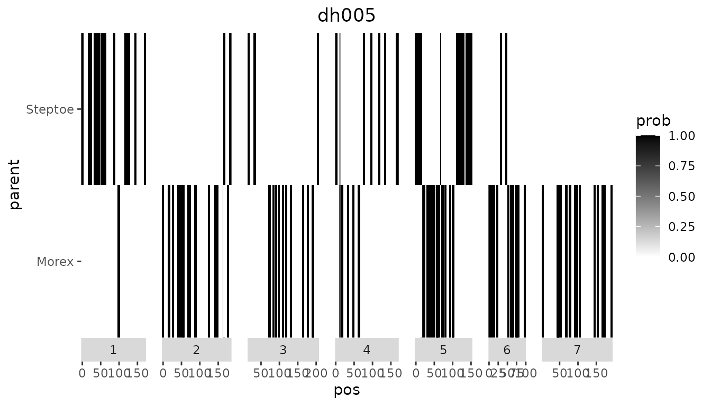
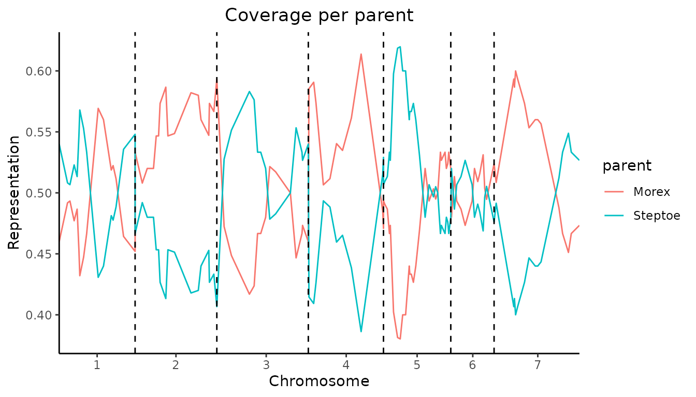
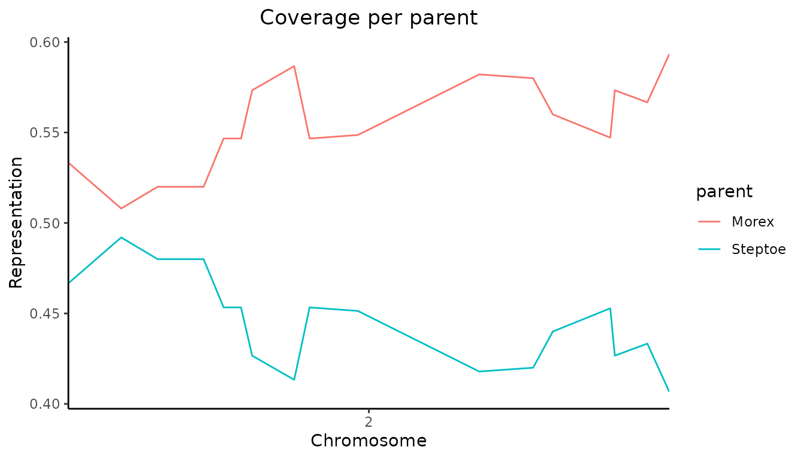
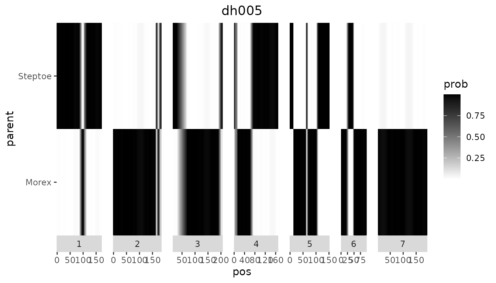
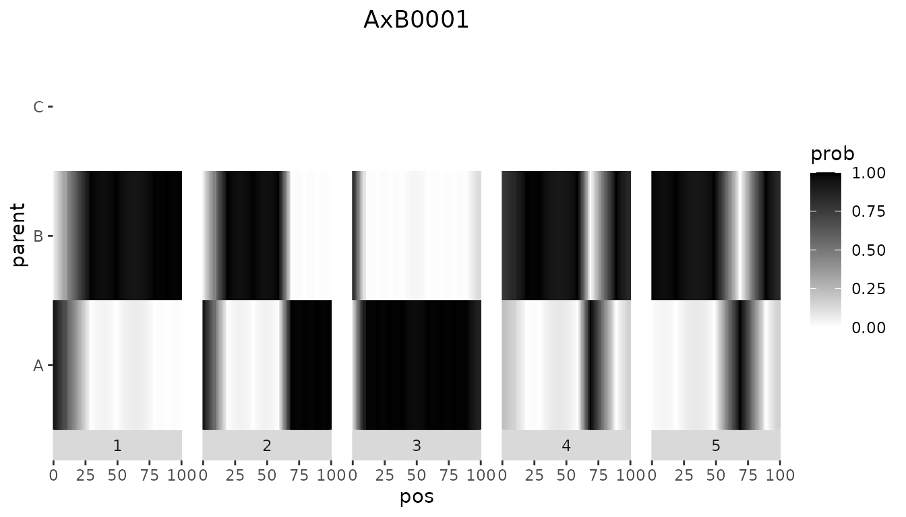
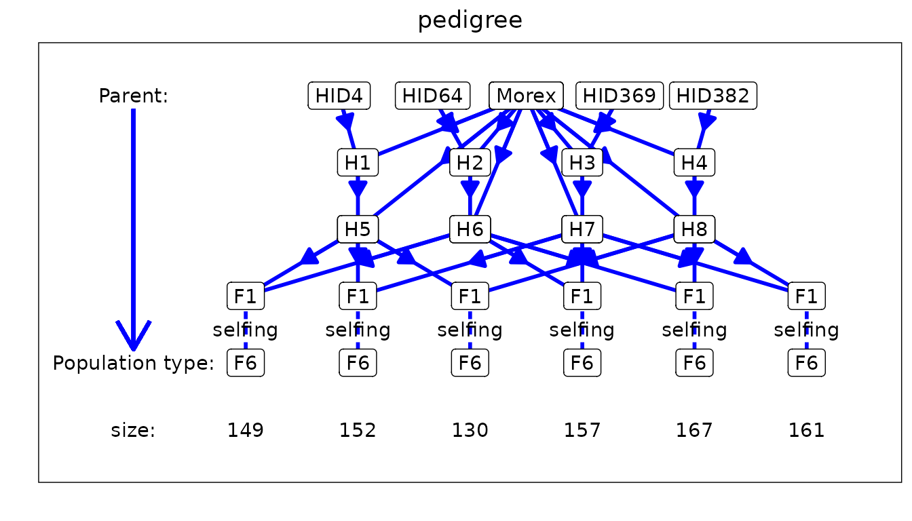

IBD calculations using statgenIBD
Bart-Jan van Rossum and Martin Boer
2023-08-31
Source:vignettes/IBDCalculations.Rmd
IBDCalculations.RmdThe statgenIBD package
The statgenIBD package is developed as an easy-to-use
package for Identity By Descent (IBD) calculations for most common
populations used in plant breeding. The calculations of the IBDs are
based on Hidden Markov Models (HMM) and inheritance vectors. For details
of the theory see Lander and Green (1987) and Huang et al. (2011).
This vignette describes how to perform these calculations and how to interpret and use its outputs. This will be done using a number of example data sets, both real life and simulated.
Population types
In the package, IBD probabilities can be calculated for many different types of populations. In the following table all supported populations are listed. Note that the value of x in the population types is variable, with its maximum value depicted in the last column.
| Population type | Cross | Description | max. x |
|---|---|---|---|
| DH | biparental | doubled haploid population | |
| Fx | biparental | Fx population (F1, followed by x-1 generations of selfing) | 8 |
| FxDH | biparental | Fx, followed by DH generation | 8 |
| BCx | biparental | backcross, second parent is recurrent parent | 9 |
| BCxDH | biparental | BCx, followed by DH generation | 9 |
| BC1Sx | biparental | BC1, followed by x generations of selfing | 7 |
| BC1SxDH | biparental | BC1, followed by x generations of selfing and DH | 6 |
| C3 | three-way | three way cross: (AxB) x C | |
| C3DH | three-way | C3, followed by DH generation | |
| C3Sx | three-way | C3, followed by x generations of selfing | 7 |
| C3SxDH | three-way | C3, followed by x generations of selfing and DH generation | 6 |
| C4 | four-way | four-way cross: (AxB) x (CxD) | |
| C4DH | four-way | C4, followed by DH generation | |
| C4Sx | four-way | C4, followed by x generations of selfing | 6 |
| C4SxDH | four-way | C4, followed by x generations of selfing and DH generation | 6 |
For IBD calculations of more complex population types, including MAGIC and population with complicated pedigree structure, see RABBIT software (Zheng, Boer, and Van Eeuwijk 2014, 2015, 2018). The IBDs calculated using RABBIT can be imported into statgenIBD as well, see Importing IBD probabilities computed using RABBIT.
Examples
We will demonstrate the basic functionality of the package using some example data sets. The first example will be for a real life data set for a relatively simple doubled haploid population. To highlight some specifics of more complex populations and crosses, we will use simulated data.
Steptoe Morex
The first example is the Steptoe Morex data, described by (Hayes et al. 1993). This is a population of 150 barley doubled haploid lines with parentage Steptoe / Morex. The population was developed for the North American Barley Genome Mapping Project by the Oregon State University Barley Breeding Program. For a full description see the website of the program.
The map and genotypic file for this population are included in the package.
Both the map and the genotypic file should be in a tab-delimited format. The map file should be a file without a header. It should contain three columns, corresponding to marker name, chromosome number and position on the chromosome in centiMorgan.
## Read the map and display the first rows.
map <- read.table(system.file("extdata/SxM", "SxM_map.txt", package = "statgenIBD"))
head(map)
#> V1 V2 V3
#> 1 plc 1 0.0
#> 2 glx 1 18.7
#> 3 wg789a 1 24.1
#> 4 abg380 1 33.5
#> 5 abc158 1 40.2
#> 6 ksua1a 1 44.2The genotypic file should a file with a header containing the marker names. The first column should contain the genotypes, starting with the parents, in this case Morex and Steptoe. The name of this column is irrelevant and can even be an empty string as in this example.
The parents are assumed to be inbred lines, without missing scores. For this Steptoe x Morex example, the markers for Morex are all 1, Steptoe all 2. The original SNP data can also be used. Missing marker scores in the offspring should have value “-”. More general, for populations with SNP scores a and b for the parents, the offspring can be scored as a (or a/a), b (or b/b), a/b, a/-, -/b, or -.
## Read the genotypic file and display the first rows and columns.
geno <- read.table(system.file("extdata/SxM", "SxM_geno.txt", package = "statgenIBD"),
header = TRUE)
head(geno[, 1:5])
#> plc glx wg789a abg380 abc158
#> Morex 1 1 1 1 1
#> Steptoe 2 2 2 2 2
#> dh001 2 1 1 1 1
#> dh002 2 2 2 2 2
#> dh003 2 2 2 2 2
#> dh004 2 2 2 2 1Using the map and genotypic files we can compute the IBD
probabilities using calcIBD. This function computes, per
genotype and marker, the probability that it descended from either
parent. If this information is known for the marker from the input, the
probabilities will simply be 0 for one of the parents and 1 for the
other. When a marker score is missing from the input, the probabilities
are calculated using the information of the other markers on the
chromosome.
## Compute IBD probabilities for Steptoe Morex.
SxMIBD <- calcIBD(popType = "DH",
markerFile = system.file("extdata/SxM", "SxM_geno.txt",
package = "statgenIBD"),
mapFile = system.file("extdata/SxM", "SxM_map.txt",
package = "statgenIBD"))
## Print summary.
summary(SxMIBD)
#> population type: DH
#> Number of evaluation points: 116
#> Number of individuals: 150
#> Parents: Morex SteptoeThe output of the calcIBD function is an object of class
IBDprob. This object is a list that consists
of five elements:
| element | class | description |
|---|---|---|
| map | data.frame |
The map for the population. |
| markers | array |
A three dimensional array with the IBD probabilities. The dimensions of this array are #genotypes x #markers x #parents. The array contains per combination of genotypes and marker the probabilities that it descended from either of the parents. |
| popType | character |
The population type. |
| parents | character |
The parents. |
The summary function can be used to get a short
description of the content of a IBDprob object.
Looking at genotype dh001 and marker
plc we can see from the genotypic file printed above
that it has a value of 2, equal to that of Steptoe. If we now look at
the output of calcIBD it shows a value of 1 for Steptoe and
a value of 0 for Morex.
SxMIBD$markers["dh001", "plc", ]
#> Morex Steptoe
#> 0 1For the combination of marker abg313b and genotype dh005 the genotypic file contained a missing value. Looking at the output we can see that the probability that this marker came from Morex is about 0.67 and the probability that it came from Steptoe is about 0.33.
SxMIBD$markers["dh005", "abg313b", ]
#> Morex Steptoe
#> 0.6702599 0.3297401Visualizing results
The calculated IBD probabilities can be visualized using the
plot function. Several types of plot can be made using this
function. Besides creating a plot, all plots also return a
ggplot object that can be further customized.
- a plot of the structure of the population for which the IBD probabilities were computed
- a plot of the computed IBD probabilities per parent for a single genotype
- a plot of the computed IBD probabilities across the genome for all genotypes
- a plot of the coverage of each parent across the genome
- a plot of the total coverage of each parent
All plots are described in more detail in the sections below.
Pedigree plot
A plot of the structure of the population for which the IBD
probabilities were computed can be made specifying
plotType = "pedigree". This plot is fully determined by the
population type of the population for which the probabilies were
computed.
### Visualize the pedigree of the population.
plot(SxMIBD,
plotType = "pedigree")
Single genotype plot
plotType = "singleGeno" will generate a plot of the
probabilities per parent for a selected genotype. The plot for
dh005 is made below. Note that it contains a lot of
white space since the markers in the file are spread widely along the
genome. In the next section we will show how to compute probabilities on
a denser grid leading to a plot with a lot less white space.
## Visualize IBD probabilities for dh005.
plot(SxMIBD,
plotType = "singleGeno",
genotype = "dh005")
Plot of IBD probabilities for all genotypes.
When specifying plotType = "allGeno" a plot is made of
all genotypes colored per evaluation position according to the parent
with the highest probability for that combination of genotype and
position. Darker colors indicate a higher probability. Dashed lines
indicate the start of a new chromosome.
## Visualize IBD probabilities for all genotypes.
plot(SxMIBD,
plotType = "allGeno")Plot the coverage of each parent across the genome.
When specifying plotType = "meanProbs" a plot is made of
the mean probabilities of each parent for each evaluation position. The
plot can be restricted to one or more chromosomes by specifying
chr.
## Visualize coverage across genome.
plot(SxMIBD,
plotType = "meanProbs")
## Visualize coverage across chromosome 2.
plot(SxMIBD,
plotType = "meanProbs",
chr = 2)
Plot the total coverage of each parent
A plot of the total coverage of each parent can be made by specifying
plotType = "totalCovarage". This will create a bar plot of
the coverage per parent over the genome. The plot can be restricted to
one or more chromosomes by specifying chr.
## Visualize coverage across genome.
plot(SxMIBD,
plotType = "totalCoverage")Evaluation positions
When calling the calcIBD function without extra
parameters, the only positions for which the calculations are made are
the positions present in the map. There are two ways to change this. A
first option is to specify the parameter evalDist. Setting
this to a value of e.g. 5, assures that extra evaluation positions are
added in such a way that the maximum distance between evaluation points
will be 5 cM.
Adding the extra evaluation points can be done on a grid by setting
grid = TRUE. Doing this defines a grid of evaluation points
from the beginning of each chromosome to the end with a distance between
the evaluation points of evalDist. The original marker
positions will be ignored in this case. To use evaluation points on a
regular grid is important for haplotype construction and is efficient
for detection of QTLs (Van Eeuwijk et al.
2009).
## Compute IBD probabilities for Steptoe Morex.
## Add extra evaluation positions on dense grid.
SxMIBD_Ext_grid <- calcIBD(popType = "DH",
markerFile = system.file("extdata/SxM", "SxM_geno.txt",
package = "statgenIBD"),
mapFile = system.file("extdata/SxM", "SxM_map.txt",
package = "statgenIBD"),
evalDist = 1,
grid = TRUE)
## Print summary.
summary(SxMIBD_Ext_grid)
#> population type: DH
#> Number of evaluation points: 1138
#> Number of individuals: 150
#> Parents: Morex SteptoeAs the summary shows, the number of evaluation points has increased to 1138. This will also show when we visualize the results. The positions of the crossovers on the different chromosomes are clearly visible now.
## Visualize IBD probabilities for dh005
plot(SxMIBD_Ext_grid,
genotype = "dh005")
When setting grid = FALSE extra evaluation positions
will be included between existing marker positions. These extra
evaluation points will be spread evenly. If we look at the map for the
Steptoe Morex example, we see that the distance between the first two
markers on chromosome 1, plc and glx,
is 18.7. To assure a maximum distance between evaluation points of 5, 3
extra evaluation points will be added. Since they will be spread evenly,
the distance between them will be 18.7/3 = 4.68. The extra evaluation
points will be named EXT_chr_pos, e.g the extra evaluation point at
position 4.68 of chromosome 1, will be named EXT_1_4.68.
## Compute IBD probabilities for Steptoe Morex.
## Add extra evaluation positions between existing markers.
SxMIBD_Ext <- calcIBD(popType = "DH",
markerFile = system.file("extdata/SxM", "SxM_geno.txt",
package = "statgenIBD"),
mapFile = system.file("extdata/SxM", "SxM_map.txt",
package = "statgenIBD"),
evalDist = 5,
grid = FALSE)
## Print summary.
summary(SxMIBD_Ext)
#> population type: DH
#> Number of evaluation points: 290
#> Number of individuals: 150
#> Parents: Morex SteptoeAs the summary shows, the number of evaluation point has increased to 290, from 116 in the original calculation with only the map positions. Looking at the first rows of the map in the output, we see that indeed 3 extra evaluation points have been added between plc and glx.
## Show first rows of map in output.
head(SxMIBD_Ext$map)
#> chr pos
#> plc 1 0.00
#> EXT_1_4.68 1 4.68
#> EXT_1_9.35 1 9.35
#> EXT_1_14.02 1 14.02
#> glx 1 18.70
#> EXT_1_21.4 1 21.40A second way of changing the position for which the computations are
made, is by specifying them in a data.frame. This
data.frame should have two columns, “chr” and “pos” and can
be specified in the calcIBD function using the
evalPos parameter.
In the package a very simple example of such a
data.frame for the Steptoe Morex data is included as a .txt
file . In it three evaluation positions are specified for each of the
chromosomes.
## Read the evalPos file and display the first rows.
evalPos <- read.table(system.file("extdata/SxM", "SxM_eval.txt", package = "statgenIBD"),
header = TRUE)
head(evalPos)
#> chr pos
#> 1 1 0
#> 2 1 20
#> 3 1 40
#> 4 2 0
#> 5 2 20
#> 6 2 40When using a data.frame with evaluation position, IBD
calculations are made only for the positions in the
data.frame. The information in the map file is still used
in those computations, but for the marker positions themselves the
evaluations are not done. The evaluation points will be named
EVAL_chr_pos, e.g the first evaluation point in the file, at position 0
of chromosome 1, will be named EVAL_1_0.
SxMIBD_evalPos <- calcIBD(popType = "DH",
markerFile = system.file("extdata/SxM", "SxM_geno.txt",
package = "statgenIBD"),
mapFile = system.file("extdata/SxM", "SxM_map.txt",
package = "statgenIBD"),
evalPos = evalPos)
## Print summary.
summary(SxMIBD_evalPos)
#> population type: DH
#> Number of evaluation points: 21
#> Number of individuals: 150
#> Parents: Morex SteptoeAs the summary shows, the number of evaluation points now decreased to 21, 3 for each of the 7 chromosomes.
In case both evalPos and evalDist are
specified the former takes prevalence and evalDist is
ignored.
Extracting value for markers of interest
Often only the subset of markers is of interest for further analysis,
e.g. for QTL Mapping of for fitting a multi-QTL model. To extract the
computed probabilities for such a marker subset from a
calcIBD object we can use the getProbs
function.
## Extract marker probabilities for markers plc and ABG053.
SxM_probs <- getProbs(SxMIBD, markers = c("plc", "ABG053"))
head(SxM_probs)
#> geno plc_Morex plc_Steptoe ABG053_Morex ABG053_Steptoe
#> 1 dh001 0 1 0 1
#> 2 dh002 0 1 1 0
#> 3 dh003 0 1 1 0
#> 4 dh004 0 1 1 0
#> 5 dh005 0 1 1 0
#> 6 dh006 0 1 1 0The output of the getProbs function is a
data.frame with a column geno containing the
genotype and for both markers the probability that it descended from
Morex and that it descended from Steptoe.
Write and read tab-delimited *.txt files
The results of IBD calculations can be written to a tab-delimited
.txt file using writeIBDs. Details about this file
format can be found in the accompanying IBD
file format vignette.
## Write IBDs to tab-delimited .txt file.
writeIBDs(SxMIBD_Ext, "SxMIBD_Ext.txt")Likewise, IBD files can be read using the readIBDs
method.
Write results to Flapjack format
The results of IBD calculations can be written to Flapjack (Milne et
al. 2010) format using writeFlapjack. Two files
will be written that can be imported directly into Flapjack, a map file
and a genotypic file. For the genotypic file the probabilities from the
IBD calculations are converted to combinations of parents. If for a
genotype x marker combination the probability that it comes from a
particular parent is high enough (higher than \(0.85 / number \; of \; parents\)), that
parent is included in the output for that genotype x marker
combination.
## Write results to Flapjack format.
writeFlapjack(SxMIBD_Ext,
outFileMap = "map.txt",
outFileGeno = "geno.txt")When opened in Flapjack the results look like this:

Simulated data
Simulated data for several more complex populations and crosses is
included in the package. These are very small and just used for the
purpose of showing some of the options and output formats in
statgenIBD.
F4
First we have a look at an F4 of a two-way RIL population, i.e. an F1
followed by 3 generations of selfing. This population was constructed
from parents A and B. As we can see from the table in the populations
section, when doing computations for an F4 populations, we can use
popType = "Fx" where x is replaced by 4.
## Compute IBD probabilities for simulated F4 population.
F4IBD <- calcIBD(popType = "F4",
markerFile = system.file("extdata/popF4", "cross.txt",
package = "statgenIBD"),
mapFile = system.file("extdata/popF4", "mapfile.txt",
package = "statgenIBD"))
## Print summary.
summary(F4IBD)
#> population type: F4
#> Number of evaluation points: 11
#> Number of individuals: 10
#> Parents: A BAs the summary shows, the output contains probabilities for two parents, A and B. The heterozygote, having an allele from both parents is called AB.
As in the previous example we can extract the IBD probabilities for
further analysis. However in this case it might be useful to not get the
probabilities for A, B and AB, but to get the probabilities for the two
parents including AB. The probability for A is then calculated as \(probability A + 0.5 * probability AB\).
Summing the probabilities like this can be done by specifying
sumProbs = TRUE in getProbs.
## Extract marker probabilities for markers M1_2 and M1_4.
F4_probs <- getProbs(F4IBD, markers = c("M1_2", "M1_4"))
head(F4_probs)
#> geno M1_2_A M1_2_B M1_2_AB M1_4_A M1_4_B M1_4_AB
#> 1 cross0001 0.48148327 0.45198692 0.0665298 0.48969130 0.44861702 0.06169168
#> 2 cross0002 0.00000000 0.00000000 1.0000000 0.05416181 0.05416181 0.89167637
#> 3 cross0003 1.00000000 0.00000000 0.0000000 0.95581746 0.01574904 0.02843350
#> 4 cross0004 0.00000000 1.00000000 0.0000000 0.01461051 0.97205517 0.01333432
#> 5 cross0005 0.00000000 1.00000000 0.0000000 0.01461051 0.97205517 0.01333432
#> 6 cross0006 0.05416181 0.05416181 0.8916764 0.05416181 0.05416181 0.89167637
## Extract marker probabilities for markers M1_2 and M1_4.
## Sum the probabilities to probabilities per parent.
F4_probs_sum <- getProbs(F4IBD, markers = c("M1_2", "M1_4"), sumProbs = TRUE)
head(F4_probs_sum)
#> geno M1_2_A M1_4_A M1_2_B M1_4_B
#> 1 cross0001 0.51474818 0.93552949 0.48525182 0.89445520
#> 2 cross0002 0.03084584 0.50000000 0.03084584 0.50000000
#> 3 cross0003 1.50000000 0.95581746 0.50000000 0.01574904
#> 4 cross0004 0.44583819 0.04555789 1.44583819 1.00300255
#> 5 cross0005 0.00000000 0.01461051 1.00000000 0.97205517
#> 6 cross0006 0.06837857 0.06082897 0.06837857 0.06082897C4S3
Also included is a C4S3 population, a four-way cross followed by 3 generations of selfing. The parents in the four-way cross where A, B, C and D, the first 4 rows in the genotypic file. The crossing scheme was (A x B) x (C x D), followed by 3 generations of selfing.
## Compute IBD probabilities for simulated C4S3 population.
C4S3IBD <- calcIBD(popType = "C4S3",
markerFile = system.file("extdata/popC4S3", "cross.txt",
package = "statgenIBD"),
mapFile = system.file("extdata/popC4S3", "mapfile.txt",
package = "statgenIBD"))
## Print summary.
summary(C4S3IBD)
#> population type: C4S3
#> Number of evaluation points: 11
#> Number of individuals: 10
#> Parents: A B C DAs the summary shows, the output contains probabilities for four parents, A, B, C, D, plus the four possible heterozygote genotypes: AC, AD, BC, BD.
Multi-cross
The final example shows how IBD computations for multiple populations can be combined. In the example we use simulated data for two F4DH populations, i.e. F4 populations as described above followed by a doubled haploid generation. For the first population the parents where A and B, for the second the parents where A and C. This is a simple example of a NAM population, having parent A as central parent.
First we compute the IBD probabilities for each of the populations separately.
## Compute IBD probabilties for AxB.
AB <- calcIBD(popType = "F4DH",
markerFile = system.file("extdata/multipop", "AxB.txt",
package = "statgenIBD"),
mapFile = system.file("extdata/multipop", "mapfile.txt",
package = "statgenIBD"),
evalDist = 1)
## Print summary.
summary(AB)
#> population type: F4DH
#> Number of evaluation points: 495
#> Number of individuals: 100
#> Parents: A B
## Compute IBD probabilties for AxC.
AC <- calcIBD(popType = "F4DH",
markerFile = system.file("extdata/multipop", "AxC.txt",
package = "statgenIBD"),
mapFile = system.file("extdata/multipop", "mapfile.txt",
package = "statgenIBD"),
evalDist = 1)
## Print summary.
summary(AC)
#> population type: F4DH
#> Number of evaluation points: 495
#> Number of individuals: 80
#> Parents: A CNow we want to combine the results from both computations for further
analyses. To combine to IBDprob objects we can use the
c function. This is only possible if both objects contain
the same type of population. Also the evaluation points for both objects
have to be identical. In this example we have two F4DH populations and
we used the same map file in the computations so combining them is
fine.
ABC <- c(AB, AC)
summary(ABC)
#> population type: F4DH
#> Number of evaluation points: 495
#> Number of individuals: 180
#> Parents: A B CLooking at the summary, we can see the our combined population now has 180 individuals, 100 from population AB and 80 from population AC. There are also three parents, A, B and C. For all individuals from population AB the probability for parent C will be 0, as will be the probability for parent B for individuals from population AC.
## Extract probabilities for markers EXT_1_1 and EXT_1_3.
ABCProbs <- getProbs(ABC, markers = c("EXT_1_1", "EXT_1_3"))
## Print probabilities for genotypes AxB0001 and AxC0001.
ABCProbs[ABCProbs$geno %in% c("AxB0001", "AxC0001"), ]
#> cross geno EXT_1_1_A EXT_1_1_B EXT_1_1_C EXT_1_3_A EXT_1_3_B EXT_1_3_C
#> 1 cross1 AxB0001 0.9600100 0.03998997 0.0000000 0.88351079 0.1164892 0.0000000
#> 101 cross2 AxC0001 0.1208691 0.00000000 0.8791309 0.09765978 0.0000000 0.9023402Note that the output now contains an extra column cross, indicating the cross the genotype came from.
The value of 0 for either parent B or parent C also shows clearly in the plots below. The left plot shows an individual from the first cross, the right one an individual from the second cross.

Plotting all genotypes together also shows the clear separation
between the to crosses in ABC.
plot(ABC, plotType = "allGeno")Importing IBD probabilities computed using RABBIT
Instead of performing IBD calculations directly with the package, it
is also possible to import IBD probabilities computed using RABBIT
software (Zheng, Boer, and Van Eeuwijk 2014, 2015, 2018). The main
advantage of using RABBIT for IBD calculations is that it can handle
complex pedigree populations and therefore can also be used in cases
where the population structure is more complex than those that can be
computed using statgenIBD, e.g. in the maize Steptoe Morex
population described before.
As an example we use a barley population described in Liller et al. (2017). This MPP design consists of 5 parents. Four wild parents were crossed with the cultivar Morex and then backcrossed with Morex once. Individuals from the four families from the backcrosses were then crossed with each other as in a full diallel design, which generated six F6 families through five generations of selfing. The data for this population is available in zipped format in the package.
RABBIT output can be read using the readRABBIT function
in statgenMPP. This has as input the standard RABBIT output
summary file and the pedigree file that needs to be provided to RABBIT
as well. This pedigree file is an optional input and is only used for
plotting the pedigree structure of the population.
## Specify files containing RABBIT output.
## Extract in a temporary directory.
tempDir <- tempdir()
inFile <- unzip(system.file("extdata/barley/barley_magicReconstruct.zip",
package = "statgenIBD"), exdir = tempDir)
## Specify pedigree file.
pedFile <- system.file("extdata/barley/barley_pedInfo.csv",
package = "statgenIBD")
## read RABBIT output.
barleyIBD <- readRABBIT(infile = inFile,
pedFile = pedFile)As for the previous examples, we can summarize and plot the imported data to get a first idea of its content.
## Summary.
summary(barleyIBD)
#> population type: F6
#> Number of evaluation points: 355
#> Number of individuals: 916
#> Parents: Morex HID4 HID64 HID369 HID382
## Plot structure of the pedigree.
plot(barleyIBD, plotType = "pedigree")